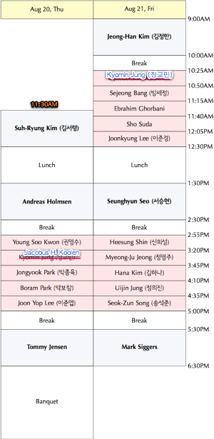

2009 Combinatorics Workshop
(2009 조합론 학술대회)
올해로 제6회째를 맞는 조합론 학술대회가 2009년에는 KAIST에서
열립니다. 많은 참석 바랍니다.
학회 포스터 (Poster)
학회 책자 (Workshop Booklet) (Posted on July 28, Updated continuously): tentative schedule + abstracts + list of registered participants.
- Date: August 20-21, 2009 (Thursday/Friday)
- Place: KAIST, Bldg#E6-1 (자연과학동, Natural Science Bldg) Room 1501, Daejeon, Korea
- Questions? Email to kaist2009
Photos
Sep. 5, 2009: 단체사진을 포함한 학술대회 사진을 올렸습니다. 모든 강연자의 사진을 준비하지는 못하여 죄송합니다.
Photo album has bee uploaded. We are sorry but we could not get photos of all speakers.
Announcements
- If possible, we encourage speakers to give a talk in English, as we have about 10 registered people who don't understand Korean. But this is not enforced and it is allowed to give a talk in Korean.
외국인이 10명 이상 등록하였으니 가능하시다면 영어로 톡 하시는 것을 권유드립니다. 그러나 한국어 톡도 괜찮습니다.
- The bus to the Banquet place will leave from KAIST at Aug 20th, 6:30pm. There will be 2 buses arranged.
At the end of banquet, the buses will take participants to either KAIST or Daedeok Innopolis Guest house.
20일 6시 30분에 저녁 식사 장소로 가는 두 대의 버스가 있을 것이고, 식사 후에 같은 버스로 KAIST나 대덕연구단지게스트하우스로 모셔드릴 예정입니다.
- If you are NOT planning to go to the banquet, please let us know ASAP!
20일 저녁 식사에 참석하지 않으신다면 저희에게 지금 바로 알려주시기 바랍니다.
- If you register, lunch coupons will be provided at the back of the name tag.
등록한 참석자에게는 점심 식권이 제공됩니다.
- 숙소를 신청하신 분들 중 학생분들의 방배치가 미세하게 조정될 예정입니다.
모든 숙소를 희망하신 등록신청하신 학생들에게 숙소가 제공됩니다.
Register and Submit a contributed talk
Invited talks are for 50 minutes each
and contributed talks are for 25 minutes each.
To register, please visit the REGISTRATION PAGE.
Registration deadline: July 20th.
등록페이지에서 숙박요청 및 강연희망 여부 등을 포함한 사항을 등록해주세요.
초청강연은 50분, 그 외의 발표는 25분입니다.
등록마감: 7월 20일
Accommodation
(New) 7/13: We are going to support the accommodation of registerd
graduate students as long as our budget allows. We encourage students to come to the workshop.
예산이 가능하면 등록기간내에 등록한 대학원생의 숙박비를 지원하려고 합니다. 많은 학생들의 참여 바랍니다.
We reserved several single rooms at Daedeok Innopolis Guest House. One single room is 40,000 won per one night, and
the organizers will make a reservation but
you are responsible for your own hotel payment.
Please let us know if you need a room when you register.
숙박이 필요하신 참석자 분들을 위해 대덕특구게스트하우스에 방을 예약해두었습니다. 1박에 4만원이며 예약은 저희가 하고 숙박비는 참석자께서 체크인할때 지불합니다.
등록하실때 저희에게 숙박이 필요하신지 알려주시기 바랍니다.

Invited Speakers
- Andreas Holmsen, KAIST. Combinatorial geometry and geometric transversals
- Tommy R. Jensen, Kyungpook National University.
Some open problems on critical graphs
- Jeong-Han Kim (김정한), NIMS.
Complete description of early giant components in random graph G(n,p)
- Suh-Ryung Kim (김서령), Seoul National University. Competition graph and its variants
- Seunghyun Seo (서승현), Kangwon National University. Counting derangements with ascents and descents in given positions
- Mark H. Siggers, Kyungpook National University.Reflexive graphs admitting semilattice polymorphisms
― a characterisation generalising chordal graphs
Organizing Committee
- Gi-Sang Cheon (천기상), Sungkyunkwan University
- Dongsu Kim (김동수), KAIST
- Jaeun Lee (이재운), Yeongnam University
Local Organizing Committee
- Soon-Yi Kang (강순이), KAIST (Email: sy2kang at kaist.ac.kr)
- Sang-il Oum (엄상일), KAIST (Email: sangil at kaist.edu)
Sponsors
Previous Combinatorics Workshops
- 2004,
Aug. 16-17,
Yonsei University
- 2005,
Aug. 8-10,
Yonsei University
- 2006,
Aug. 9-10,
Yeongnam University
- 2007, Aug. 6-8, KAIST
- 2008, Aug. 7-8, Sungkyunkwan University
Registered Partcipants
Students are denoted by ε.
- Firouzeh Ashraf (University of Isfahan, Iran)ε
- Ralph Bottesch (KAIST)ε
- Dan Drake (KAIST)
- Ebrahim Ghorbani (Sharif University of Technology, Tehran / POSTECH )ε
- Andreas Holmsen (KAIST)
- Tommy Jensen (Kyungpook National University)
- Jacobus H. Koolen (POSTECH)
- Reza Sharafdini (Pusan National university)ε
- Mark Siggers (Kyungpook National University)
- Sho Suda (Tohoku University / POSTECH)ε
- Soon-Yi Kang 강순이 (KAIST)
- Youngmee Koh 고영미 (University of Suwon)
- Young Soo Kwon 권영수 (Yeungnam University)
- Kang Lin Kim 김강린 (NIMS)ε
- Dongsu Kim 김동수 (KAIST)
- Bo Young Kim 김보영 (NIMS)ε
- Sang-Sub Kim 김상섭 (POSTECH)ε
- Sang Yun Kim 김상윤 (KAIST)ε
- Suh-Ryung Kim 김서령 (Seoul National University)
- Seog-Jin Kim 김석진 (Konkuk University)
- Sun Ah Kim 김선아 (Seoul National University)ε
- Youngdo Kim 김영도 (KAIST)ε
- Daniel Kim 김영호 (KAIST)ε
- Yonggu Kim 김용구 (Chonnam National University)
- Jeong-Han Kim 김정한 (NIMS)
- Juin Kim 김주인 (KAIST)ε
- Hana Kim 김하나 (Sungkyunkwan University)ε
- Sook Min 민숙 (Yonsei University)
- Kyoung Suk Park 박경숙 (Ajou University)ε
- Boram Park 박보람 (Seoul National University)ε
- Wonjin Park 박원진 (Seoul National University)ε
- Jeonghyeon Park 박정현 (KAIST)ε
- Jongyook Park 박종육 (POSTECH)ε
- Juho Park 박주호 (KAIST)ε
- Choonkil Park 박춘길 (Hanyang University)
- Sejeong Bang 방세정 (Pusan National University)
- Yongjoo Baek 백용주 (KAIST)ε
- Yoshio Sano 사노 요시오 (Kyoto University)ε
- Soo-jeong Seo 서수정 (Chonnam National University)ε
- Seunghyun Seo 서승현 (Kangwon National University)
- Seung-Woo Son 손승우 (KAIST)
- Wanbin Son 손완빈 (POSTECH)ε
- Seok-Zun Song 송석준 (Jeju National University)
- Heesung Shin 신희성 (Université Lyon 1)
- Sang-il Oum 엄상일 (KAIST)
- Seonghun Yeom 염성훈 (Chonnam National University)ε
- Hyonju Yu 유현주 (POSTECH)ε
- Taedong Yun 윤태동 (Massachusetts Institute of Technology)ε
- Moon Sung Lee 이문성 (NIMS)
- Sangwook Ree 이상욱 (University of Suwon)
- Sanghyeon Lee 이상현 (Seoul National University)ε
- Sang Hoon Lee 이상훈 (KAIST)ε
- Woosun Lee 이우순 (POSTECH)ε
- Yuni Lee 이윤이 (KAIST)ε
- Jaeun Lee 이재운 (Yeungnam University)
- Joonkyung Lee 이준경 (KAIST)ε
- Junse Lee 이준세 (KAIST)ε
- Joon Yop Lee 이준엽 (POSTECH)ε
- Yongsub Lim 임용섭 (KAIST)ε
- Heyjin Jang 장혜진 (POSTECH)ε
- Gyeong A Jeong 정경아 (Yonsei University)ε
- Kyomin Jung 정교민 (KAIST)
- Myeong-Ju Jeong 정명주 (Korea Science Academy)
- Uijin Jung 정의진 (KAIST)
- Jisu Jeong 정지수 (KAIST)ε
- Ji-Hwan Jung 정지환 (Sungkyunkwan University)ε
- Taeyoung Chung 정태영 (POSTECH)ε
- Soojin Cho 조수진 (Ajou University)
- Juhyun Cho 조주현 (KAIST)ε
- Hee Je Cho 조희제 (Konkuk University)ε
- Hyeong-Kwan Ju 주형관 (Chonnam National University)
- Gi-Sang Cheon 천기상 (Sungkyunkwan University)
- Yutae Choi 최유태 (POSTECH)ε
- Jeong-Ok Choi 최정옥 (Trinity College)
- Meesoon Ha 하미순 (KAIST)
- Sang-Eon Han 한상언 (Chonbuk National University)
- Ji-Sun Huh 허지선 (Yonsei University)ε
305-701 대전광역시 유성구 과학로 335(구성동 373-1) 한국과학기술원 수리과학과 Tel. 042-350-2702~4(Fax 2710)
copyright (C) 2009, KAIST Dept. of Mathematical Sciences, all rights reserved.
Last modified: Mon Aug 3 22:27:59 KST 2009